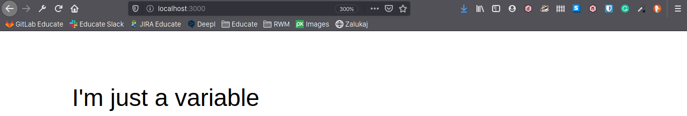
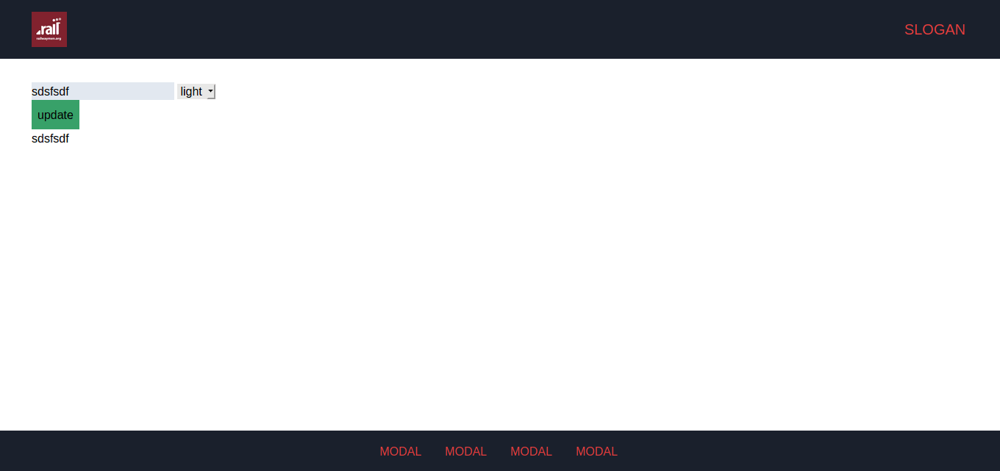

Dr Jekyll && Mr Hide
using static site generator as a CMS engine
A little bit of history
How we used to do CMSes in our company
Comfortable Mexican Sofa: summary
Pros:
Fairly easy install
Up to date and well maintained
Nice admin panel
Verbose config file
Cons:
Comes with big bloat (bootstrap, jquery)
Authentication isn't all that great by the default (http basic auth)
Lack of authorization: no roles setup, admin can edit everything
Simple problems tend to be more difficult (page title)
Debugging external dependencies is hard (especially rails engines)
Preserves css, js and html in DB...
Comfortable Mexican Sofa: verdict
Nice as fully customizable landing page, but would not integrate it with existing admin panel for any commercial app.
Newbie friendly, but installation is 🔥
I don't mean cool, I mean 🔥 HELL 🔥
Using refinery cms
Here be dragons! 🐉
RefineryCMS: summary
Pros:
Extensive guides
Up to date(mostly) and well maintained
Many extensions to choose from
SEO support built in
Admin Panel built in and extensible
Import from wordpress?
Cons:
Installation on Rails 6 is 🔥hell🔥
Config templates are missing
Layout still has to be defined with a code
A lot of bloat in the code(migrations, dependencies, useless directories)
Simple things are complicated - AGAIN
Preserves css, js and html in DB...AGAIN
Outdated gem release on ruby gems
FAQ doesn’t answer basic questions(why is wysiwyg not rendering?)
RefineryCMS: verdict
Perhaps nice as standalone application if you're sticking to "refinery way".
Custom solution with ActionText
Custom solution with ActionText: summary
Pros:
Very easy install
Already part of your Rails 6 applications
File upload with ActiveStorage - again already baked into your app
No migration needed to add actiontext to existing model
Simple things are finally simple
Cons:
No out-of-the-box admin panel - you have to build one yourself
You're still saving html/css/js into DB...
TrixJS is not really flexible and you can't replace it
Custom solution with ActionText: verdict
Best way to integrate simple content editing into existing app.
CLI
bundle exec jekyll build -s SOURCE -d DESTINATION
OUR USE CASE
jekyll
|-- _config.yml
|-- _data
| |-- footer_default.json
| |-- footer.json
| |-- header_default.json
| |-- header.json
| |-- modals_default.json
| |-- modals.json
| `-- theme.json
|-- footer.de.html
|-- footer.en.html
|-- header.de.html
|-- header.en.html
|-- _includes
| |-- footer.scss
| |-- header.scss
| |-- _modals.scss
| `-- _shared.scss
`-- theme.haml
app/views/static
|-- footer.de.html
|-- footer.en.html
|-- header.de.html
|-- header.en.html
`-- theme.haml
VARIABLES

---
simple_variable: "I'm just a variable"
---
{{ page.simple_variable }}
SIMPLE JSON STORE
// jekyll/_data/store.json
{
"simple_variable": "Another content"
}
---
---
{{ site.data.store.simple_variable }}
USING IN CONTROLLER
def rebuild
options = {
"source" => File.expand_path("jekyll"),
"destination" => File.expand_path("app/views/static"),
}
Jekyll::Commands::Build.process(options)
redirect_to root_path
end
USING AS MODEL
class Content
attr_reader :text
def initialize
@path = "jekyll/_data/store.json"
content = read
@text = content[:text]
end
def save(attributes)
File.write(@path, attributes.to_json)
end
def read
JSON.parse(File.open(@path).read, symbolize_names: true)
end
end
JEKYLL WITH WISPER
# config/initializers/wisper.rb
require "jekyll_builder_listener"
default_options = {
prefix: :on,
async: true,
}
Wisper.subscribe(JekyllBuilderListener, **default_options)
# lib/jekyll_builder_listener.rb
class JekyllBuilderListener
def self.on_element_change
Jekyll::Commands::Build.process({
"source": File.expand_path("jekyll"),
"destination": File.expand_path("app/views/static"),
})
end
end
# app/controllers/pages_controller.rb
include Wisper::Publisher
# in action:
publish(:element_change)
Sample theme changer with jekyll

JEKYLL WITH I18N
# config/environment.rb, lib/jekyll_builder_listener.rb
Rails.root.join(
"config",
"locales",
"themes",
theme_name,
"*.yml"
)
.then(&Dir.method(:[]))
.then(&I18n.backend.method(:load_translations))
WHAT ABOUT CACHING?
# config/environments/production.rb
config.action_view.cache_template_loading = false
SOMETHING ISN'T WORKING?
Worry not!
jekyll doctor